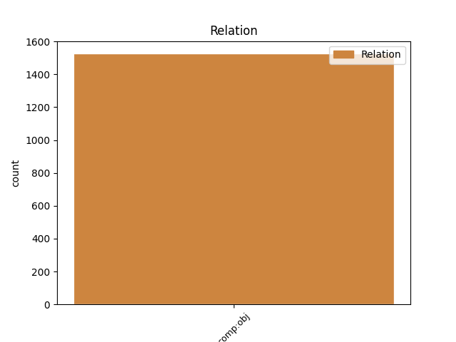
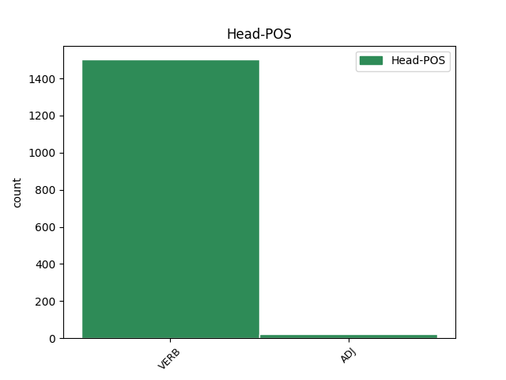
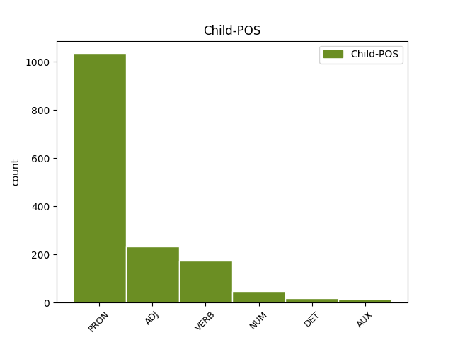

Distribution of features within this leaf



Agreement Rules sorted by frequency.
- When the dependent token is the direct object complements(comp:obj) of the head token,
1 و _ _ _ _ 0 _ _ _
2 قالت _ _ _ _ 0 _ _ _
3 وكالة _ _ _ _ 0 _ _ _
4 انباء _ _ _ _ 0 _ _ _
5 الشرق _ _ _ _ 0 _ _ _
6 الاوسط _ _ _ _ 0 _ _ _
7 المصرية _ _ _ _ 0 _ _ _
8 ان _ _ _ _ 0 _ _ _
9 شعث _ _ _ _ 0 _ _ _
10 ابلغ _ _ _ _ 0 _ _ _
11 ماهر _ _ _ _ 0 _ _ _
12 نتائج _ _ _ _ 0 _ _ _
13 المحادثات _ _ _ _ 0 _ _ _
14 التى _ _ _ _ 0 _ _ _
15 أجرا _ _ _ _ 0 _ _ _
16 ها _ _ _ _ 0 _ _ _
17 باول _ _ _ _ 0 _ _ _
18 مع _ _ _ _ 0 _ _ _
19 رئيس _ _ _ _ 0 _ _ _
20 الوزراء _ _ _ _ 0 _ _ _
21 الفلسطينى _ _ _ _ 0 _ _ _
22 محمود _ _ _ _ 0 _ _ _
23 عباس _ _ _ _ 0 _ _ _
24 / _ _ _ _ 0 _ _ _
25 أبو _ _ _ _ 0 _ _ _
26 مازن _ _ _ _ 0 _ _ _
27 / _ _ _ _ 0 _ _ _
28 فى _ _ _ _ 0 _ _ _
29 اريحا _ _ _ _ 0 _ _ _
30 فى _ _ _ _ 0 _ _ _
31 وقت _ _ _ _ 0 _ _ _
32 سابق _ _ _ _ 0 _ _ _
33 من _ _ _ _ 0 _ _ _
34 اليوم _ _ _ _ 0 _ _ _
35 حيث _ _ _ _ 0 _ _ _
36 اكد _ _ _ _ 0 _ _ _
37 الجانب _ _ _ _ 0 _ _ _
38 الفلسطينى _ _ _ _ 0 _ _ _
39 على _ _ _ _ 0 _ _ _
40 موقف _ _ _ _ 0 _ _ _
41 ه _ _ _ _ 0 _ _ _
42 الثابت _ _ _ _ 0 _ _ _
43 إزاء _ _ _ _ 0 _ _ _
44 خريطة _ _ _ _ 0 _ _ _
45 الطريق _ _ _ _ 0 _ _ _
46 ، _ _ _ _ 0 _ _ _
47 الخطة _ _ _ _ 0 _ _ _
48 السلمية _ _ _ _ 0 _ _ _
49 التى _ _ _ _ 0 _ _ _
50 أعدت أَعَدّ VERB VP-A-3FS-- Aspect=Perf|Gender=Fem|Number=Sing|Person=3|Voice=Act 0 _ _ _
51 ها هُوَ PRON SP---3FS4- Case=Acc|Gender=Fem|Number=Sing|Person=3|PronType=Prs 50 comp:obj _ Gloss=he,it,she|LTranslit=huwa|Translit=hā|Vform=هَا
52 الولايات _ _ _ _ 0 _ _ _
53 المتحدة _ _ _ _ 0 _ _ _
54 ل _ _ _ _ 0 _ _ _
55 إحلال _ _ _ _ 0 _ _ _
56 السلام _ _ _ _ 0 _ _ _
57 فى _ _ _ _ 0 _ _ _
58 المنطقة _ _ _ _ 0 _ _ _
59 و _ _ _ _ 0 _ _ _
60 إقامة _ _ _ _ 0 _ _ _
61 دولة _ _ _ _ 0 _ _ _
62 فلسطينية _ _ _ _ 0 _ _ _
63 مستقلة _ _ _ _ 0 _ _ _
64 عام _ _ _ _ 0 _ _ _
65 2005 _ _ _ _ 0 _ _ _
66 ب _ _ _ _ 0 _ _ _
67 جانب _ _ _ _ 0 _ _ _
68 إسرائيل _ _ _ _ 0 _ _ _
69 . _ _ _ _ 0 _ _ _
Disagree Examples:
1 و _ _ _ _ 0 _ _ _
2 في _ _ _ _ 0 _ _ _
3 21 _ _ _ _ 0 _ _ _
4 حزيران _ _ _ _ 0 _ _ _
5 / _ _ _ _ 0 _ _ _
6 يونيو _ _ _ _ 0 _ _ _
7 ، _ _ _ _ 0 _ _ _
8 شدد _ _ _ _ 0 _ _ _
9 وزير _ _ _ _ 0 _ _ _
10 الدفاع _ _ _ _ 0 _ _ _
11 الاسباني _ _ _ _ 0 _ _ _
12 فيديريكو _ _ _ _ 0 _ _ _
13 تريو _ _ _ _ 0 _ _ _
14 على _ _ _ _ 0 _ _ _
15 ان _ _ _ _ 0 _ _ _
16 العقد _ _ _ _ 0 _ _ _
17 الموقع _ _ _ _ 0 _ _ _
18 في _ _ _ _ 0 _ _ _
19 نهاية _ _ _ _ 0 _ _ _
20 عام _ _ _ _ 0 _ _ _
21 1998 _ _ _ _ 0 _ _ _
22 بين _ _ _ _ 0 _ _ _
23 سانتا _ _ _ _ 0 _ _ _
24 بربارة _ _ _ _ 0 _ _ _
25 و _ _ _ _ 0 _ _ _
26 منتجي _ _ _ _ 0 _ _ _
27 الدبابة _ _ _ _ 0 _ _ _
28 الالمانية _ _ _ _ 0 _ _ _
29 ، _ _ _ _ 0 _ _ _
30 ك _ _ _ _ 0 _ _ _
31 روس _ _ _ _ 0 _ _ _
32 مافييه _ _ _ _ 0 _ _ _
33 ورينمينتال _ _ _ _ 0 _ _ _
34 ل _ _ _ _ 0 _ _ _
35 تصنيع _ _ _ _ 0 _ _ _
36 الدبابة _ _ _ _ 0 _ _ _
37 في _ _ _ _ 0 _ _ _
38 اسبانيا _ _ _ _ 0 _ _ _
39 و _ _ _ _ 0 _ _ _
40 إنتاج _ _ _ _ 0 _ _ _
41 235 _ _ _ _ 0 _ _ _
42 دبابة _ _ _ _ 0 _ _ _
43 ليوبارد _ _ _ _ 0 _ _ _
44 2 _ _ _ _ 0 _ _ _
45 خلال _ _ _ _ 0 _ _ _
46 عشر _ _ _ _ 0 _ _ _
47 سنوات _ _ _ _ 0 _ _ _
48 ، _ _ _ _ 0 _ _ _
49 يتضمن _ _ _ _ 0 _ _ _
50 بندا _ _ _ _ 0 _ _ _
51 ل _ _ _ _ 0 _ _ _
52 حماية _ _ _ _ 0 _ _ _
53 التكنولوجيا _ _ _ _ 0 _ _ _
54 الالمانية _ _ _ _ 0 _ _ _
55 و _ _ _ _ 0 _ _ _
56 يجب _ _ _ _ 0 _ _ _
57 في _ _ _ _ 0 _ _ _
58 " _ _ _ _ 0 _ _ _
59 جميع _ _ _ _ 0 _ _ _
60 الاحوال _ _ _ _ 0 _ _ _
61 " _ _ _ _ 0 _ _ _
62 ان _ _ _ _ 0 _ _ _
63 تحترم اِحتَرَم VERB VISA-3FS-- Aspect=Imp|Gender=Fem|Mood=Sub|Number=Sing|Person=3|VerbForm=Fin|Voice=Act 0 _ _ _
64 ه هُوَ PRON SP---3MS4- Case=Acc|Gender=Masc|Number=Sing|Person=3|PronType=Prs 63 comp:obj _ Gloss=he,it,she|LTranslit=huwa|Translit=hu|Vform=هُ
65 شركة _ _ _ _ 0 _ _ _
66 " _ _ _ _ 0 _ _ _
67 جنرال _ _ _ _ 0 _ _ _
68 ديناميكس _ _ _ _ 0 _ _ _
69 " _ _ _ _ 0 _ _ _
70 الاميركية _ _ _ _ 0 _ _ _
71 . _ _ _ _ 0 _ _ _
1 1955 _ _ _ _ 0 _ _ _
2 - _ _ _ _ 0 _ _ _
3 الرئيس _ _ _ _ 0 _ _ _
4 السوري _ _ _ _ 0 _ _ _
5 الاسبق _ _ _ _ 0 _ _ _
6 شكري _ _ _ _ 0 _ _ _
7 القوتلي _ _ _ _ 0 _ _ _
8 يعود _ _ _ _ 0 _ _ _
9 الى _ _ _ _ 0 _ _ _
10 سوريا _ _ _ _ 0 _ _ _
11 بعد _ _ _ _ 0 _ _ _
12 ان _ _ _ _ 0 _ _ _
13 امضى أَمضَى VERB VP-A-3MS-- Aspect=Perf|Gender=Masc|Number=Sing|Person=3|Voice=Act 0 _ _ _
14 في _ _ _ _ 0 _ _ _
15 منفى _ _ _ _ 0 _ _ _
16 ه _ _ _ _ 0 _ _ _
17 في _ _ _ _ 0 _ _ _
18 مصر _ _ _ _ 0 _ _ _
19 ست سِتَّة NUM QV----F-4R Case=Acc|Definite=Cons|Gender=Fem|NumForm=Word|NumValue=3 13 comp:obj _ Gloss=six|LTranslit=sittat|Root=s_t_t|Translit=sitta|Vform=سِتَّ
20 سنوات _ _ _ _ 0 _ _ _
21 . _ _ _ _ 0 _ _ _
1 1979 _ _ _ _ 0 _ _ _
2 - _ _ _ _ 0 _ _ _
3 نيكاراغوا _ _ _ _ 0 _ _ _
4 : _ _ _ _ 0 _ _ _
5 الجنرال _ _ _ _ 0 _ _ _
6 سوموزا _ _ _ _ 0 _ _ _
7 يتخلى _ _ _ _ 0 _ _ _
8 عن _ _ _ _ 0 _ _ _
9 الحكم _ _ _ _ 0 _ _ _
10 بعد _ _ _ _ 0 _ _ _
11 معارك _ _ _ _ 0 _ _ _
12 استمرت اِستَمَرّ VERB VP-A-3FS-- Aspect=Perf|Gender=Fem|Number=Sing|Person=3|Voice=Act 0 _ _ _
13 خمسة خَمسَة NUM QV----M-4R Case=Acc|Definite=Cons|Gender=Masc|NumForm=Word|NumValue=3 12 comp:obj _ Gloss=five|LTranslit=ḫamsat|Root=_h_m_s|Translit=ḫamsata|Vform=خَمسَةَ
14 اسابيع _ _ _ _ 0 _ _ _
15 ضد _ _ _ _ 0 _ _ _
16 الساندينيين _ _ _ _ 0 _ _ _
17 و _ _ _ _ 0 _ _ _
18 أسفرت _ _ _ _ 0 _ _ _
19 عن _ _ _ _ 0 _ _ _
20 مقتل _ _ _ _ 0 _ _ _
21 حوالي _ _ _ _ 0 _ _ _
22 40 _ _ _ _ 0 _ _ _
23 الف _ _ _ _ 0 _ _ _
24 مدني _ _ _ _ 0 _ _ _
25 . _ _ _ _ 0 _ _ _
1 1998 _ _ _ _ 0 _ _ _
2 - _ _ _ _ 0 _ _ _
3 الاسد _ _ _ _ 0 _ _ _
4 في _ _ _ _ 0 _ _ _
5 باريس _ _ _ _ 0 _ _ _
6 ل _ _ _ _ 0 _ _ _
7 المرة _ _ _ _ 0 _ _ _
8 الاولى _ _ _ _ 0 _ _ _
9 منذ _ _ _ _ 0 _ _ _
10 22 _ _ _ _ 0 _ _ _
11 عاما _ _ _ _ 0 _ _ _
12 و _ _ _ _ 0 _ _ _
13 الزيارة _ _ _ _ 0 _ _ _
14 استغرقت اِستَغرَق VERB VP-A-3FS-- Aspect=Perf|Gender=Fem|Number=Sing|Person=3|Voice=Act 0 _ _ _
15 ثلاثة ثَلَاثَة NUM QV----M-4R Case=Acc|Definite=Cons|Gender=Masc|NumForm=Word|NumValue=3 14 comp:obj _ Gloss=three|LTranslit=ṯalāṯat|Root=_t_l__t|Translit=ṯalāṯata|Vform=ثَلَاثَةَ
16 ايام _ _ _ _ 0 _ _ _
17 . _ _ _ _ 0 _ _ _
18 و _ _ _ _ 0 _ _ _
19 في _ _ _ _ 0 _ _ _
20 اليوم _ _ _ _ 0 _ _ _
21 ذات _ _ _ _ 0 _ _ _
22 ه _ _ _ _ 0 _ _ _
23 ، _ _ _ _ 0 _ _ _
24 زارت _ _ _ _ 0 _ _ _
25 بارجتان _ _ _ _ 0 _ _ _
26 بريطانيتان _ _ _ _ 0 _ _ _
27 ل _ _ _ _ 0 _ _ _
28 أول _ _ _ _ 0 _ _ _
29 مرة _ _ _ _ 0 _ _ _
30 منذ _ _ _ _ 0 _ _ _
31 48 _ _ _ _ 0 _ _ _
32 عاما _ _ _ _ 0 _ _ _
33 ، _ _ _ _ 0 _ _ _
34 مرفأ _ _ _ _ 0 _ _ _
35 اللاذقية _ _ _ _ 0 _ _ _
36 السوري _ _ _ _ 0 _ _ _
37 . _ _ _ _ 0 _ _ _
1 و _ _ _ _ 0 _ _ _
2 أوضح _ _ _ _ 0 _ _ _
3 المصدر _ _ _ _ 0 _ _ _
4 ان _ _ _ _ 0 _ _ _
5 دينتشو _ _ _ _ 0 _ _ _
6 دينيف _ _ _ _ 0 _ _ _
7 ( _ _ _ _ 0 _ _ _
8 72 _ _ _ _ 0 _ _ _
9 عاما _ _ _ _ 0 _ _ _
10 ) _ _ _ _ 0 _ _ _
11 التهمت اِلتَهَم VERB VP-A-3FS-- Aspect=Perf|Gender=Fem|Number=Sing|Person=3|Voice=Act 0 _ _ _
12 ه هُوَ PRON SP---3MS4- Case=Acc|Gender=Masc|Number=Sing|Person=3|PronType=Prs 11 comp:obj _ Gloss=he,it,she|LTranslit=huwa|Translit=hu|Vform=هُ
13 النيران _ _ _ _ 0 _ _ _
14 حيا _ _ _ _ 0 _ _ _
15 ليل _ _ _ _ 0 _ _ _
16 الجمعة _ _ _ _ 0 _ _ _
17 السبت _ _ _ _ 0 _ _ _
18 في _ _ _ _ 0 _ _ _
19 منزل _ _ _ _ 0 _ _ _
20 ه _ _ _ _ 0 _ _ _
21 في _ _ _ _ 0 _ _ _
22 بلدة _ _ _ _ 0 _ _ _
23 دراغانوفو _ _ _ _ 0 _ _ _
24 في _ _ _ _ 0 _ _ _
25 منطقة _ _ _ _ 0 _ _ _
26 ترنوفو _ _ _ _ 0 _ _ _
27 ( _ _ _ _ 0 _ _ _
28 شمال _ _ _ _ 0 _ _ _
29 شرق _ _ _ _ 0 _ _ _
30 ) _ _ _ _ 0 _ _ _
31 . _ _ _ _ 0 _ _ _